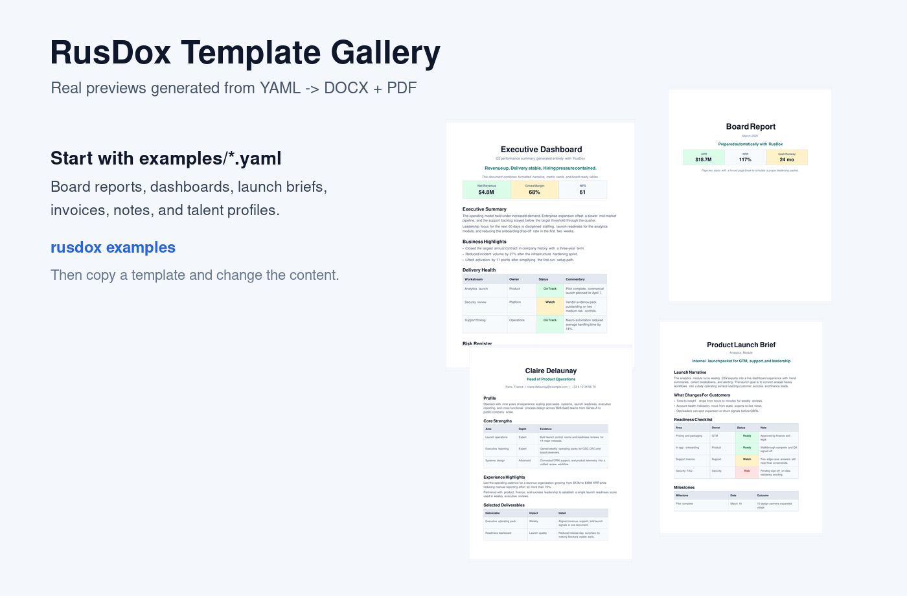
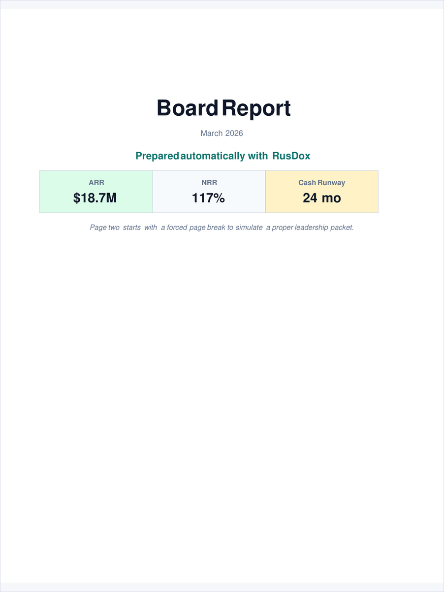
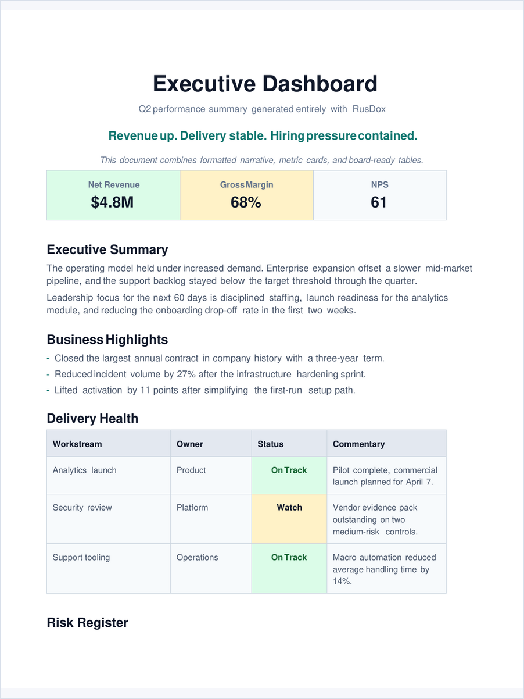
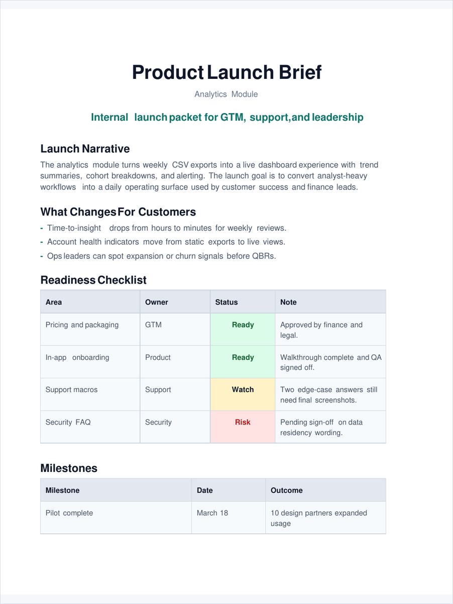
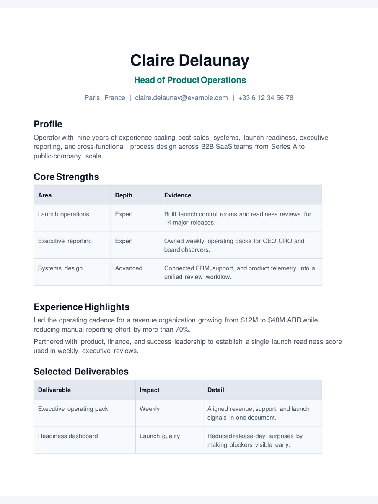
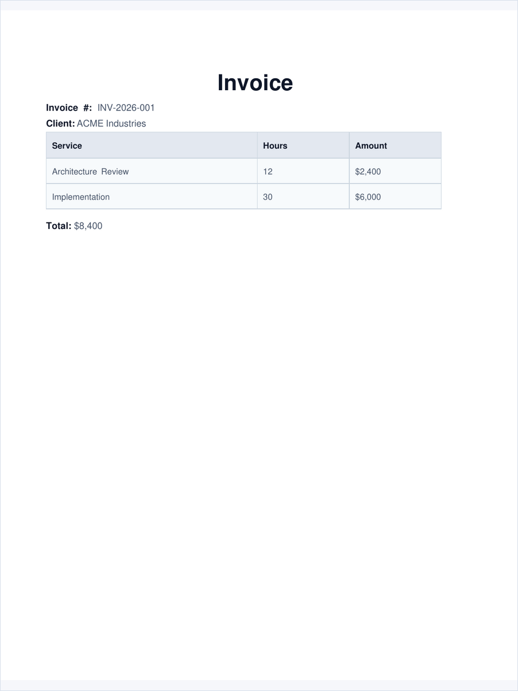
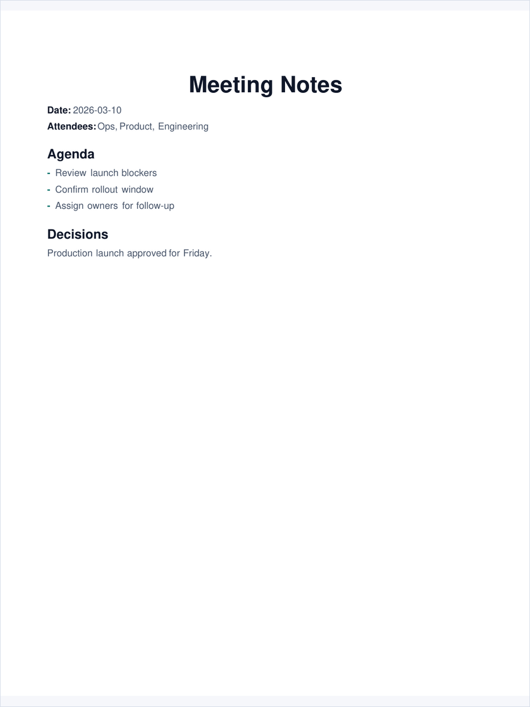

These previews are generated from the real PDF outputs in rendered/.
That means the gallery shows actual RusDox output, not mockups.
Each featured example also opens in the local-first browser playground. The playground gives an immediate structural preview; its verified DOCX/PDF links are enabled only while the checked-in YAML is unchanged.

Board Report

- Spec: ../examples/board_report.yaml
- Playground: Open this example
- Evidence: DOCX/PDF parity report
- Output: board-style packet with cover page, metrics, and scorecard tables
Executive Dashboard

- Spec: ../examples/executive_dashboard.yaml
- Playground: Open this example
- Evidence: DOCX/PDF parity report
- Output: dashboard-style summary with metrics and status tables
Product Launch Brief

- Spec: ../examples/product_launch_brief.yaml
- Playground: Open this example
- Evidence: DOCX/PDF parity report
- Output: launch narrative with milestones and readiness checks
Talent Profile

- Spec: ../examples/talent_profile.yaml
- Playground: Open this example
- Evidence: DOCX/PDF parity report
- Output: profile or resume-style document
Invoice

- Spec: ../examples/invoice.yaml
- Playground: Open this example
- Evidence: DOCX/PDF parity report
- Output: invoice layout with line items and totals
Meeting Notes

- Spec: ../examples/meeting_notes.yaml
- Playground: Open this example
- Evidence: DOCX/PDF parity report
- Output: compact notes with metadata, agenda, and decisions
Contract Fixtures
These fixtures exercise the less visible parts of the dual-output contract. Their reports are generated from the real DOCX and PDF outputs alongside the visual gallery reports.
Complete Dual-Output Contract
- Spec: ../examples/dual_output_contract.yaml
- Evidence: DOCX/PDF parity report
- Coverage: shared landscape geometry, visible page fields, breaks, URI and internal links, bookmarks, TOC, footnotes, rich/merged/nested cells, and row pagination controls
International Scripts
- Spec: ../examples/international_scripts.yaml
- Evidence: DOCX/PDF parity report
- Coverage: Unicode preservation and fallback across Latin, Arabic/RTL, Hebrew, CJK, emoji, and mixed-script text; see the compatibility matrix for shaping limits
Visual Accessibility
- Spec: ../examples/visual_assets_showcase.yaml
- Evidence: DOCX/PDF parity report
- Coverage: required meaningful alt text preserved across source, reopened DOCX, and PDF semantic projection
Regenerate Gallery Assets
./scripts/generate_gallery_assets.sh
./scripts/generate_parity_reports.sh